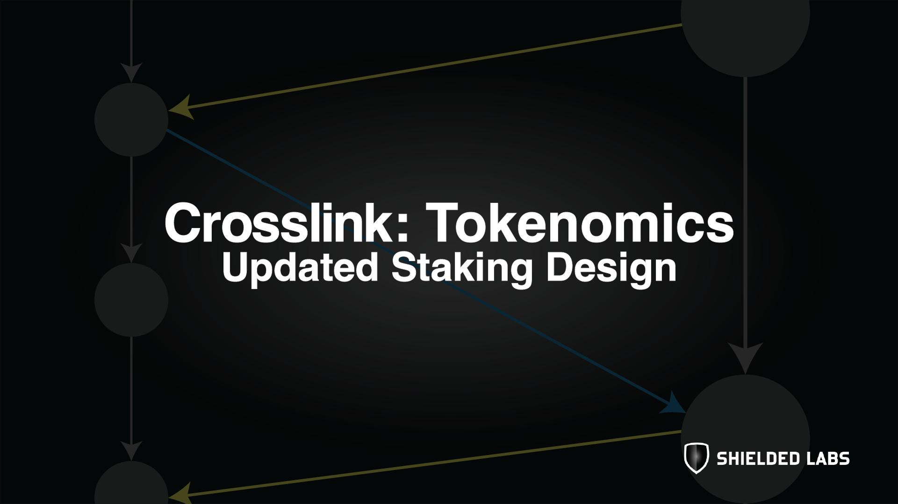

Crosslink: Updated Staking Design

Crosslink builds on Proof of Work (PoW) by adding a finality gadget that provides an additional layer of security and protection against rollbacks. All economic activity and block validation continue to occur on the PoW chain, with the finality gadget running in parallel to anchor blocks and prevent chain reorgs.
Since publishing our previous blog post on tokenomics, we’ve received significant feedback that the original design was too rigid to support liquidity. In particular, the 30-day unbonding period and 10-day epoch were seen as unnecessarily long. Liquidity is a concern for both existing holders and potential new capital, and we understand the importance of striking a better balance between privacy, security, and accessibility.
The good news is that we’ve identified a way to shorten the epoch and unbonding periods while preserving the privacy and security benefits the design was meant to achieve. Our analysis suggests that a 5-day epoch with a 1-epoch unbonding period is possibly feasible. This change would allow faster access to funds (typically within 5 to 10 days) while maintaining meaningful privacy protections for stakers.
Our goal in this post is to describe the revised Crosslink design, explain the rationale and trade-offs behind it, and show how it continues to reflect Zcash’s unique requirement to preserve privacy while enabling staking. The original proposal was never intended to be final. It was a starting point to gather feedback, refine assumptions, and iterate toward a more balanced solution. The ideas presented in this blog post should likewise be understood as a starting point, with the expectation that community input and real-world experience will guide how Crosslink evolves over time.
Updated Staking Design
Staking in Crosslink takes place exclusively within the Orchard pool. Participants “lock” their ZEC to delegate stake to a chosen finalizer and earn rewards. When unstaking, funds are “unlocked” but remain subject to a 1-epoch (5-day) unbonding period before becoming spendable. Depending on when an unstake is requested, funds become available between 5 and 10 days later.
For security and transparency, staked amounts are revealed so the community can verify the total ZEC staked and its distribution across finalizers. This accountability ensures that the delegation process remains fair and verifiable without compromising core privacy principles.
Crosslink incorporates several design features that balance privacy, security, and usability:
Batching of staking and unstaking (privacy): Transactions are processed in fixed 5-day epochs, grouping all commitments into a single batch. This reduces information leakage and makes it harder to link staking or unstaking actions to individual users. Participants can also reallocate their stake to another finalizer during these windows.
Quantization of stake amounts (privacy): Staking transactions must be made in exponential increments of 10 (e.g., 1, 10, 100, 1,000, 10,000, etc.). This approach prevents observers from easily inferring individual staking patterns, preserving privacy while maintaining accountability among finalizers.
Unbonding period (privacy and security): Once an unstake request is made, coins remain locked for the rest of the current epoch and the following one, ensuring a minimum delay of 5 to 10 days. This provides time to detect and respond to potential attacks while also encouraging participants to keep some funds liquid in Orchard, strengthening the overall anonymity set.
For example, a participant staking 1,000 ZEC would begin earning rewards once the batch is processed at the end of the 5-day window. If they later chose to unstake on the second day of a new epoch, their funds would remain locked for the remaining three days of that epoch plus five additional days before becoming spendable.
Rationale & Trade-Offs
The design of Crosslink staking reflects a set of trade-offs between privacy, security, time to market, usability, and various economic incentives. Again, the current design should be seen as a starting point that will evolve through feedback and iteration. By outlining the rationale and trade-offs, we hope to give the community clarity on how Crosslink attempts to balance Zcash’s unique requirements with the practical realities of delivering a staking protocol.
Privacy
Zcash’s value comes from its ability to provide strong privacy, and Crosslink’s design reflects this priority. The 5-day batching interval and quantized stake amounts both reduce information leakage, which makes it harder to link individual actions to specific users. The unbonding period also contributes to privacy in an indirect but important way. Because staked ZEC is intentionally unavailable for immediate use, many participants will likely choose to stake only part of their holdings and keep the rest liquid within Orchard. This behavior helps preserve a broad and healthy anonymity set by keeping liquid funds available in the Orchard pool, ensuring that staking does not undermine one of Zcash’s defining features.
We have examined other ways to preserve privacy while staking. One approach we’ve considered is shielded staking, similar to Penumbra’s design. While this could strengthen privacy by further reducing information about stake amounts, it also introduces substantial complexity and raises questions about how much additional privacy it would actually deliver relative to the trade-offs. For Crosslink V1, our priority is to deliver secure and functional staking on a practical timeline, and shielded staking does not currently offer a compelling trade-off given the risks and delays it would introduce. That said, we have scoped out how Penumbra-style shielded delegations might be adapted to Zcash, including the creation of a separate staking domain with commitments, nullifiers, and verifiable finalizer weights. We see this, or another approach that could better balance privacy with accountability, as an area for continued exploration in future versions of Crosslink.
Security
Crosslink strengthens Zcash’s overall security in multiple ways. By introducing finality, it adds a layer of safety that increases confidence in holding ZEC, which in turn can positively influence its price and create a reflexive cycle where stronger security attracts more capital and a higher valuation further expands the security budget.
From a technical perspective, Crosslink provides an added layer of insurance by improving resilience across several attack scenarios:
Proof of Work compromise: The network is designed for finalizers to finalize a previous block to preserve the canonical chain without requiring an immediate hard fork.
Proof of Stake compromise: The network is designed to temporarily revert to probabilistic finality until finalizers and stakers reestablish consensus.
Combined PoW and PoS compromise: A coordinated recovery could still be achieved through an emergency patch or hard fork, introducing the credible threat of slashing an attacker’s coins. This makes such attacks more complex and significantly more expensive to carry out, which is something that pure PoW alone cannot achieve.
Unbonding delays remain an important component of this security model because they provide time to detect and respond to potential threats such as incorrect finality, collusion, or rollback attacks. Historical incidents including the Ethereum DAO hack, rollback attacks on Ethereum Classic and ZEN, and the Qubic mining attack on Monero illustrate why a buffer period is essential. At the same time, excessively long unbonding periods can constrain liquidity, so the challenge lies in finding a duration that balances security and usability.
A well-defined incident response plan plays a key role in achieving that balance. It encompasses everything from monitoring and detection to mitigation and recovery, giving the protocol the flexibility to respond quickly under pressure. One idea, inspired by Kris Nuttycombe of the Electric Coin Company, is to prepare an emergency network upgrade patch that could temporarily freeze the PoS portion of transactions and consensus while allowing PoW and regular transactions to continue. In the event of a crisis, having a ready-made patch would shorten the time it takes for the community to act. This capability is one of the reasons we now have confidence that a one-epoch unbonding period, typically five days, can provide sufficient protection without compromising security.
It is also worth noting that while an incident response plan can mitigate risks and shorten required unbonding periods, the breadth and size of the Zcash community make rapid social coordination challenging, similar to what we see in Bitcoin or Ethereum.
Time to Market
One of our primary objectives is time to market. We believe the most effective way to improve Crosslink is to release an initial version, gather user feedback, and then iterate quickly in future versions. By shipping a functional version sooner rather than later, we can build on real-world experience, learn from the community, and make incremental improvements. This avoids endless theoretical debate and ensures Crosslink is evolving in a way that addresses the actual needs of its users.
From an engineering perspective, the current design is relatively straightforward to implement. It builds on existing Orchard transaction logic and primarily adds staking-specific tracking, reward distribution, and enforcement of the unbonding period. The rules of fixed staking and unstaking intervals, quantized amounts, and a defined unbonding delay are conceptually simple, which makes them easier for participants to understand and for developers to implement.
In addition, we have moved away from Malachite and now maintain our own lightweight version of Tendermint, called Tenderlink. This change improves stability, reduces technical debt, and removes reliance on upstream development. It also gives us greater control over performance optimizations, including potential network upgrades that could expand the validator set to hundreds or even thousands in future versions of Crosslink.
Incentivizing Long-Term Holders and Network Health
The staking design is also meant to align with Zcash’s long-term economic goals. Our impression is that the Zcash community generally values reliability over short-term growth, though both can reinforce each other over time. By requiring a 1-epoch unbonding period, Crosslink attempts to reduce churn and reward long-term holders. Participants who remain committed to the network over time are the ones who earn rewards, while those seeking quick entry and exit are less likely to benefit. Locking up circulating supply can also create scarcity, which may positively influence the price of ZEC. In this sense, staking “honors the holders” by rewarding those aligned with Zcash’s mission and long-term success, while promoting the overall health and stability of the network.
Beyond economics, Crosslink is designed to empower Zcash holders to participate more directly in securing the network by running finalizer nodes, participants we refer to as Protocol Guardians. In Zcash’s early days, hobbyists could mine with GPUs and actively contribute to the network, but the introduction of ASICs made that participation inaccessible to most, leading to the loss of an estimated 90 percent of the user base. Crosslink creates an opportunity to restore that sense of broad involvement by giving ZEC holders a meaningful role in consensus as Protocol Guardians. Providing ZEC holders with a direct way to participate in the network and earn rewards has the potential to significantly expand the active user base.
Attracting New Capital and Usability
Attracting new capital, whether from institutional or retail investors, is an important factor we underweighted in our initial design. Privacy, security, and liquidity are all features that could be attractive to new capital. Liquidity is also a usability issue: the more difficult it is to access funds, the less likely some participants will choose to stake. By reducing the epoch length and unbonding period, we have lowered usability barriers for both retail and institutional participants. Liquidity and simplicity are key to adoption: the shorter waiting time makes staking more attractive to investors who value flexibility, without compromising privacy or security.
Although the rules of batching, quantization, and unbonding are conceptually straightforward, Crosslink’s design introduces friction into the user experience. Wallets will need to display staking and unstaking windows clearly, ideally with calendars or countdowns, so users know when they can act. The requirement to split funds into quantized increments also creates extra steps. The design is simple to explain but requires users to plan ahead, and lowering these usability barriers will be key to encouraging broader adoption.
We also evaluated liquid staking tokens but concluded that they are out of scope for Crosslink V1. While liquid staking tokens can improve flexibility and liquidity for stakers, they introduce added complexity and risks to Crosslink and could create new risks around concentration and secondary market dynamics. Because time to market is a top priority, we believe it is best to defer liquid staking to later versions, once the initial version is established and tested in practice.
Conclusion
Shielded Labs is on schedule to deliver a working testnet prototype by the end of the year. Once the prototype is live and users can experiment with it, we will re-evaluate community and coinholder sentiment to ensure there is broad support for moving forward.
Again, this updated design is not intended to be final. It will continue to evolve as we gather feedback, observe testnet results, and learn from real-world experience. We invite the community to share their thoughts, questions, and suggestions to help refine our design and guide the next phase of development.
You can follow the conversation on the Zcash Community Forum.
_______________
This post reflects the collective work of the Shielded Labs team. Special thanks to Zooko, Nate, and Mark for their review and feedback.